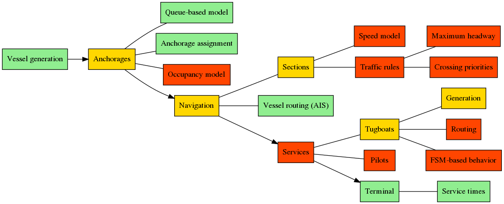
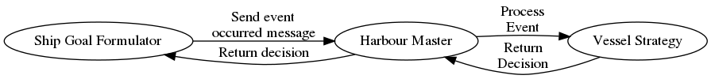

Port Simulator
This framework is designed to simulate maritime port environments. The system can be de-composed in the following elements:
- Vessel generation: generates new incoming vessels
- Anchorages
- Navigation: simulates vessel navigation based on AIS data
- Services: tugboats and pilots
- Terminal: simulate berth operations
- Vessel: vessel strategy, or, in other words, what should the vessel do?
- Messaging: communication system between entities
The image below highlights which simulation components are implemented (green), partially implemented (yellow) and not yet implemented (red).

To quickly run the example model execute the following:
python main.py \
--out sim-output \
--step 10 \
--verbose y \
--graphics y \
--cache y \
--seed 567
Vessel generation
The vessel generation is handled by the VesselGeneratorProcessor class, this class requires the following parameters:
inter_arrival_time_sampler: a function f(vessel_type) that returns the sampled inter-arrival time for the next vessel arrival (of the input type)vessel_info_sampler: a function f(vessel_type) that returns the vessel properties (aVesselInfoobject, or a subclass) for the given vessel typespawn_area_filename: path to a geojson file that defines a single polygon, the area in which vessels are generated. Seemap_data/ocean/spawn.geojsonfor an example
For an example see example_model/berth_service_distribution_factory.py
Anchorages
Anchorages are implemented as a simple FIFO queuing system. Anchorages are loaded from a GeoJSON file with a single FeatureCollection containing a list of Polygons, each defined as:
{
"type": "Feature",
"properties": {
"name": "1", // Anchorage name
"max_draught": 10.0, // Max draught in meters
"use": "", // Optional
"id": 0 // Unique anchorage identifier
},
"geometry": {
"type": "Polygon",
"coordinates": [
[1.377333, 42.047833],
[1.305833, 42.065863],
[1.314286, 42.103538],
[1.356744, 42.134278],
[1.367560, 42.136667]
]
}
}
See map_data/anchorages/anchorages.geojson for a complete example.
The anchorage loading is done via the AnchoragesInitializer class in the following way:
anchorages_generator = AnchoragesInitializer(world, anchorages_filename)
anchorages_generator.create_anchorages()
The anchorage allocation is explained in the Vessel section.
Navigation
Vessel navigation is simulated using traces extracted from the AIS data. Traces can be created using the tracer tool, stored in the ais-tracer repository.
Navigation is handled by the PathFinder singleton, which can be initialized in the following way:
path_finder = PathFinder.get_instance()
# traces_folder specifies the path to a folder containing a set of traces in GeoJSON files.
path_finder.load_traces(traces_folder)
The PathFinder takes care of finding suitable routes for incoming and departing vessels. Consult the class for further documentation on its workings.
To generate a path from the ocean to a given berth (identified by berth_id) use the method ocean_berth_path(). To generate a path from a given berth to the ocean use ocean_berth_path() and reverse it using reverse_path()
Services
Work in progress
Terminals and berths
Berths are loaded in the model via the BerthInitializer:
# BerthServiceDistributionFactory reads a service times csv file
# and returns the average service time for each berth
berth_service_distribution_factory = BerthServiceDistributionFactory(
terminal_service_times_filename)
berths_generator = BerthsInitializer(
world,
berths_filename,
berth_service_distribution_factory)
berths_generator.create_berths()
The berths_filename points to a .csv file with the following fields:
id: unique berth identifiername: berth namelat: latitude in WSG84 formatlon: longitude in WSG84 formatdescription: optional descriptiontype: berth type (not used in the model)max_quay_length: max quay length in metersmax_depth: max depth in metersvessel_types: allowed vessel classesterminal: terminal to which the berth belongs to. Terminal names must match the ones in the terminal service times file
The berth identifiers should match the ones used in the traces, so, if a trace $x$ connects the ocean to berth 137 there must exist a berth with id 137 in the berths file.
Terminal service times are loaded from a .csv file (in the example above terminal_service_times_filename) with the following columns:
terminal: name of the terminalsection: section id of the terminalclass 1: average service time in seconds for class 1 vesselsclass 2: average service time in seconds for class 1 vessels...: average service time in seconds for other classes
Vessel
The behavior of vessel is defined by a strategy class, for an example see the DefaultVesselStrategy class. This class is used by the harbour master to decide what should be the next step for the vessel.
# See the class for further documentations
vessel_strategy = DefaultVesselStrategy(
world=world,
anchorage_designator=assign_anchorage,
berth_designator=berth_allocation_designator,
path_finder=path_finder)
The decision system of a vessel is composed of three main elements, the VesselGoalFormulator, which zkeeps track of the current goal and generates an event (by sending a message to the Harbour Master) when the current goal is met. The Harbour Master has a vessel_strategy object which processes the incoming message and returns a decision, which is then in turn sent back to the vessel.

This structure allows the vessel strategy to be replaced easily by an alternative strategy.
Messaging
For more information on messaging see messaging.md